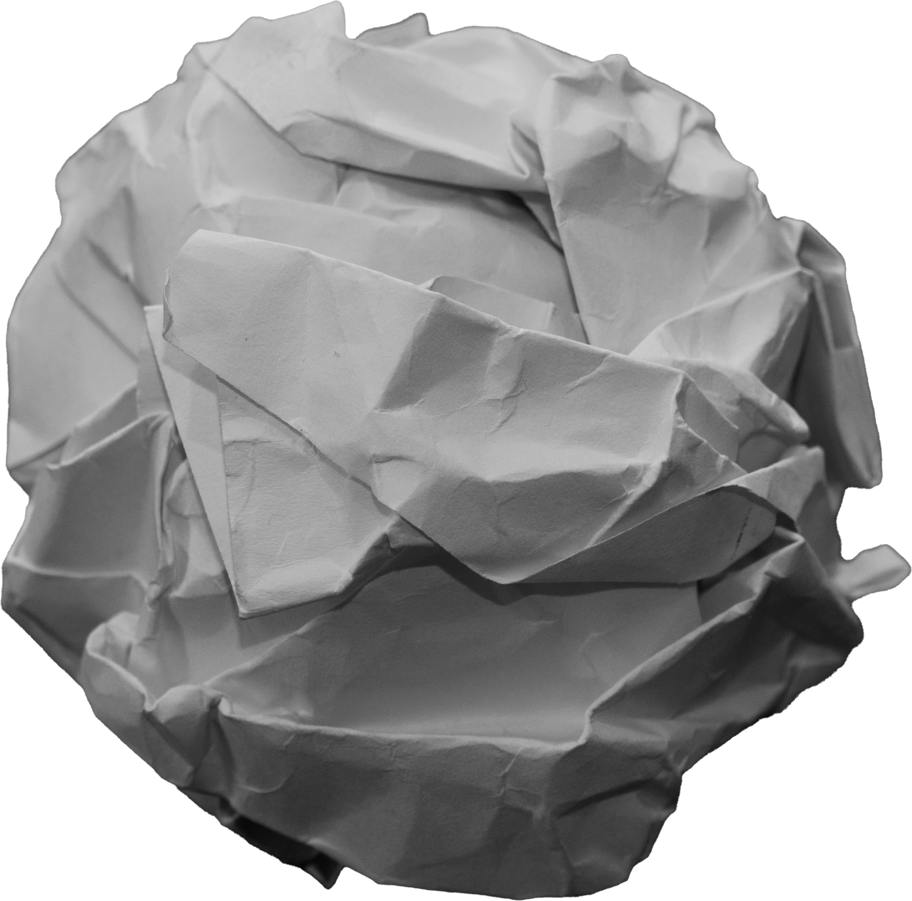
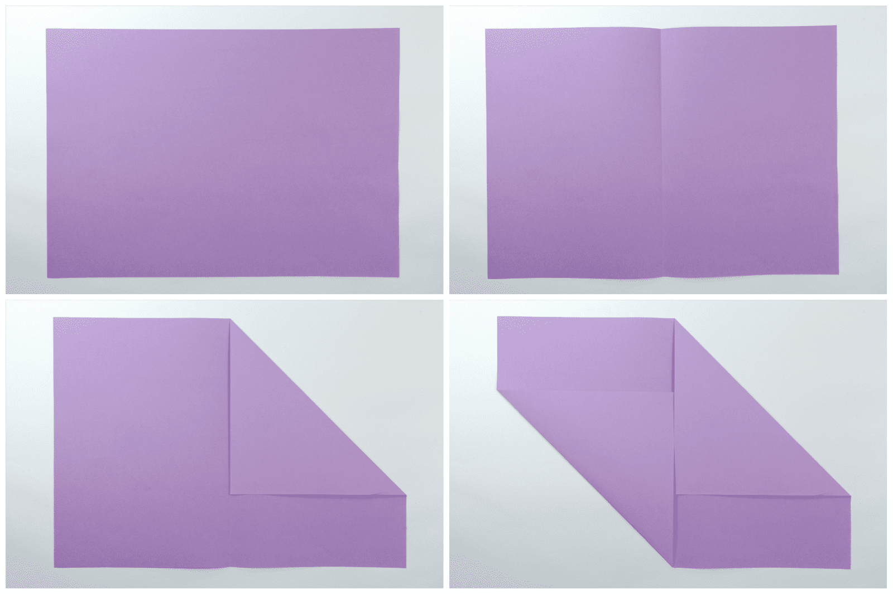
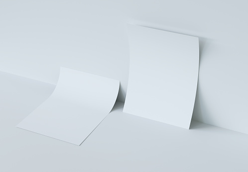
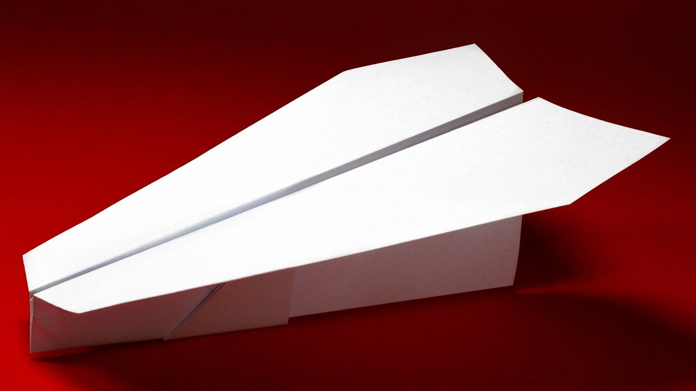

Realistic Paper Simulator: Proposal
Names: Siva Tanikonda, Krishna Mani, Max Tse, Brandon Huang
Overview
The goal of this project is to create a realistic simulation of paper physics (folding, creasing, bending, etc.). The project will also include a few demos to compare the behavior of real paper with our simulated paper material.
Problem Overview
In CS 184 Project 4, we have learned how to simulate cloth physics using a mass and spring-based system. But, simulating paper introduces a few novel problems, including but not limited to: creasing/folding (after paper has been creased/folded, it doesn't simply return to its old shape) and elastic bending (if you bend a piece of paper to a slight degree, it will return to its original shape, unlike with cloth). This requires us to maintain some sense of "memory" in the mesh throughout the simulation, which will be a challenge. We will solve this problem by first reading research papers that other people have made regarding this problem, and then trying to translate the research to make a simulation system. Another challenge with this project will be creating the demos, since we have not created 3D models from scratch in this class, and it may be difficult to create interesting simulations of certain physical behaviors of paper (ex: crumpling, folding complex shapes, etc.).
Goals and Deliverables
We hope to be able to create images/videos of various physical phenomena regarding paper. Some behaviors we want to simulate are:
|

Paper Crumpling
|

Paper Folding
|
|

Paper Bending
|

(Stretch Goal) Folding Paper Airplane
|
As for interactivity in our simulation, we are hoping to allow users to change the gravity and what mesh they want to represent as a paper material. The quality/performance of our system will mainly be measured subjectively based on how well the demos we create simulate the real-life behavior of paper (ex. we will compare crumpling a real paper to crumpling a paper in our simulation). In particular, we hope to simulate the behavior of paper without running into clipping issues in our mesh. Therefore, our key research question is: is it possible to simulate paper effectively via a computer simulation, and is it possible to create accurate, interesting demonstrations of complex paper behavior using our simulation? As for the latter part of our research question, whether or not we can simulate something complex like origami folding is going to be an uncertainty in our project, so it will be interesting to see how far we can push the accuracy of such a demonstration. In order to have a successful project, our team will hope to do the following:
- Create a working and reasonably realistic simulation of paper physics/material, including gravity and rendering.
- Create demos of paper crumpling, paper folding, and paper bending.
- Attempt to create as realistic of a demo as possible for folding a simple origami model.
To account for potential unexpected problems during implementation, we will reserve the last week of the project as buffer time in-case we run into unexpected bugs/challenges when implementing. This project should be doable in the given time frame, since other people (particularly at UC Berkeley) have already looked into how to solve this problem in past research. So, we should have ample time to explore creating a complex demo for our simulation.
Schedule
Week 1 (4/7 - 4/13) - Write the base code that we will use to display our simulation and change basic parameters such as gravity. We also want to incorporate paper material properties into our mesh data structure.
Week 2 (4/14 - 4/20) - Create the simulation system based on our data structure and interface in the previous week. Also, Create the basic demos for the project (crumpling, folding, and bending).
Week 3 (4/21 - 4/27) - Attempt to create the complex origami demo (we will use the rest of the remaining project time to try and make this demo look as good as possible and enhance our simulation as needed).
Week 4 (4/28 - 5/4) - Buffer time in-case some of the earlier weeks' tasks take too much time.
Resources
Work has been done at UC Berkeley on paper physics, so we will refer to that work in our project. We will also be referring-to and using our Project 3 and Project 4 code to deal with meshing, rasterization, and physics in our project. Here is a potential list of outside resources we will reference:
As for tools we may use:
- (Programming Language) C++
- (Graphics Library) OpenGL: opengl.org
- (Creating Demo Models) Blender: blender.org
- (Coding) VSCode: code.visualstudio.com
- (Operating System) Linux and MacOS
- (Hardware Resources) MacBooks and a desktop with a dedicated graphics card